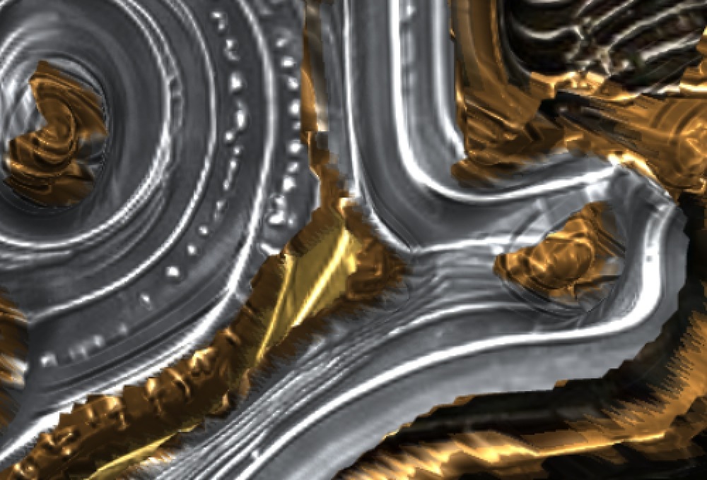
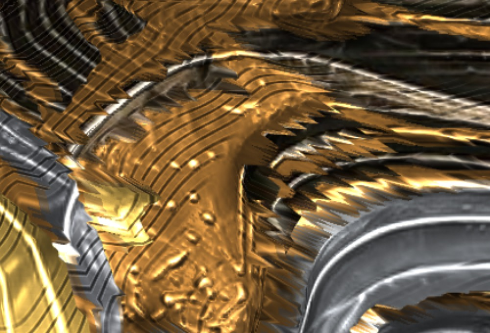
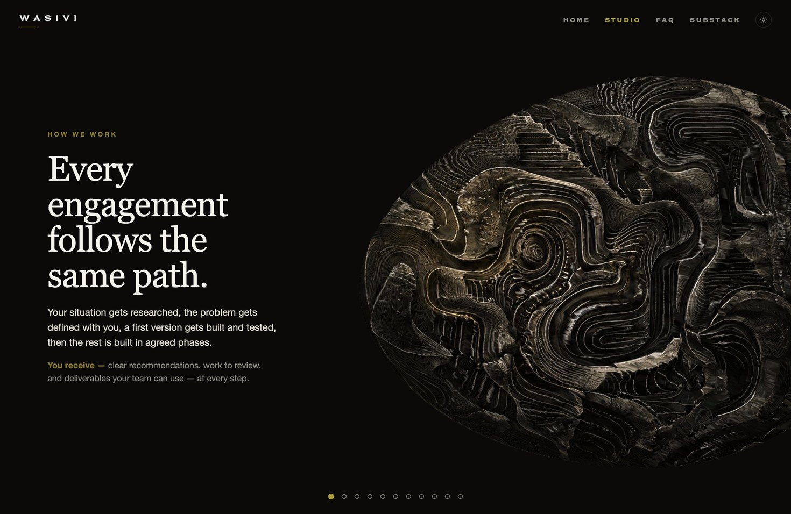
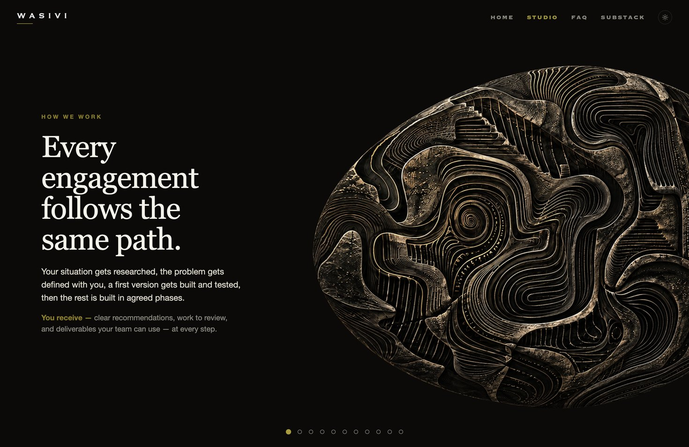
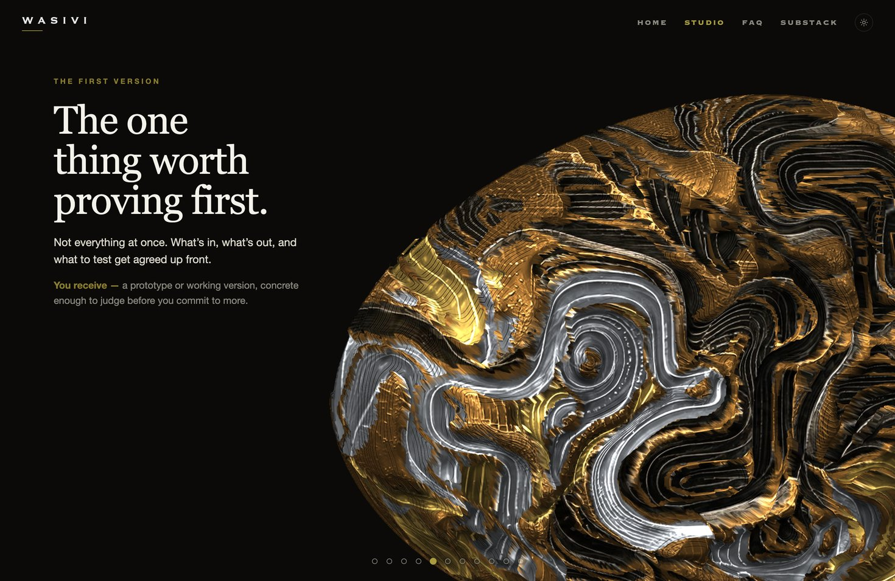
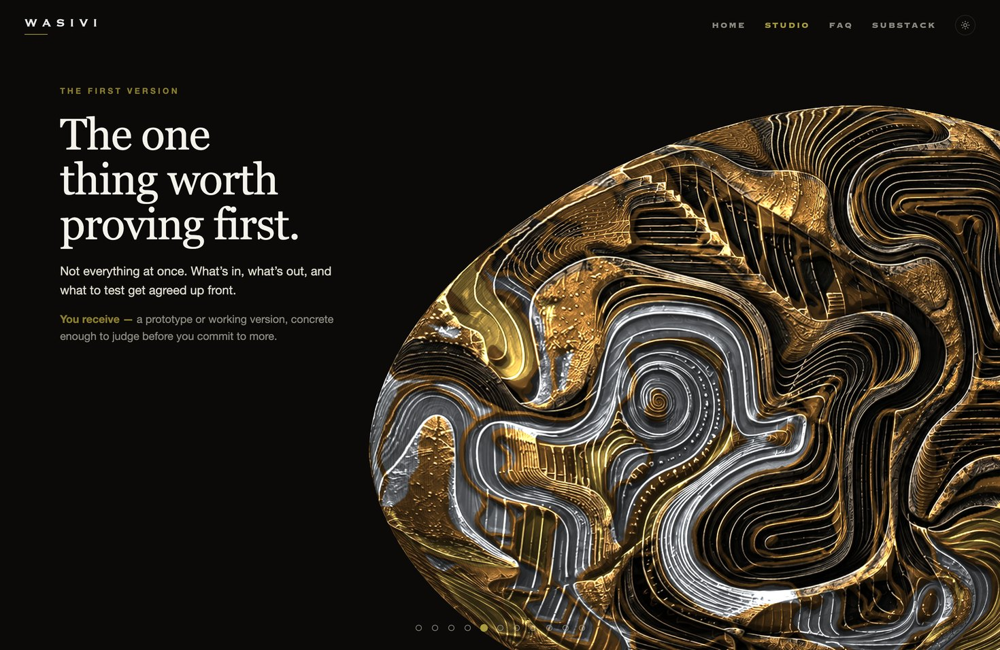
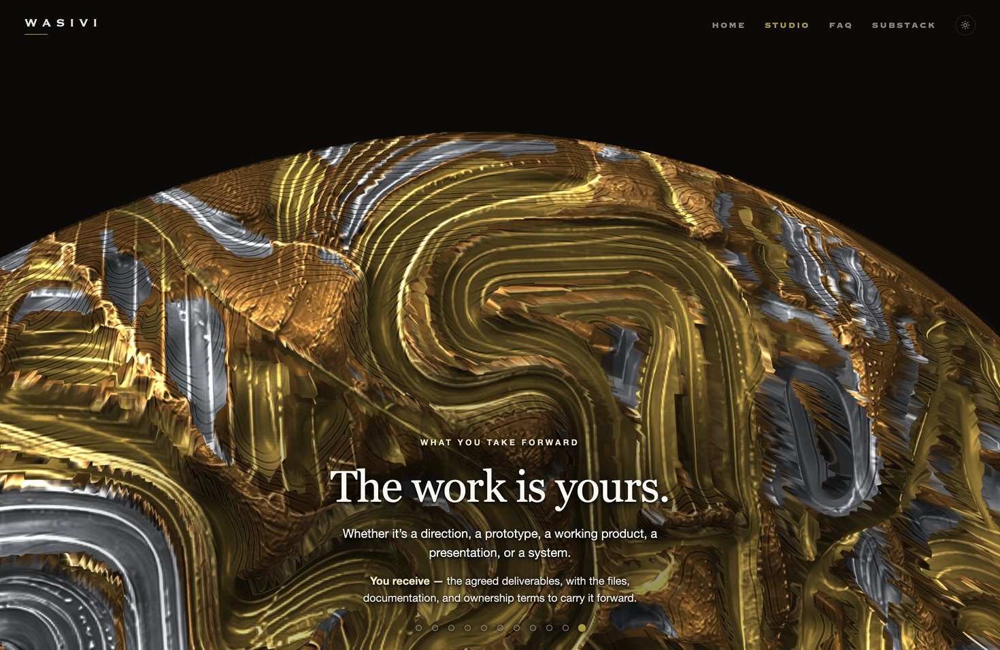
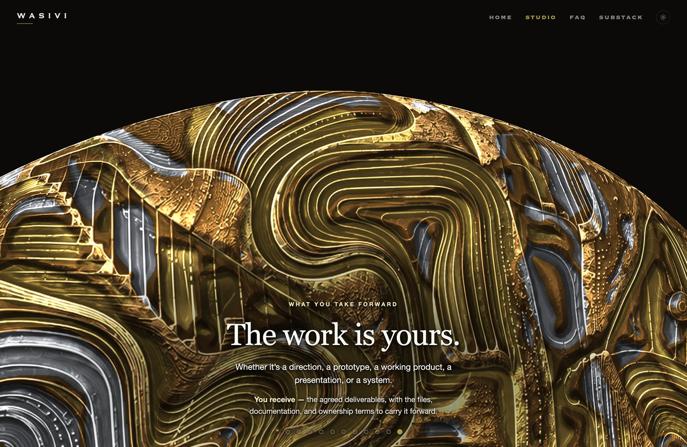

How We Work
The sculpture, old and new
Drag across each picture. Old, on the left, is what wasivi.com showed until October 30, 2026. New, on the right, is what it shows now.
Slide 5, the spiral, close up
Doubled in size so every pixel shows. Watch the edges of the gold.

OldNewSlide 5, the channels, close up
Also doubled in size.

OldNewSlide 1


OldNewSlide 5


OldNewSlide 11


OldNew